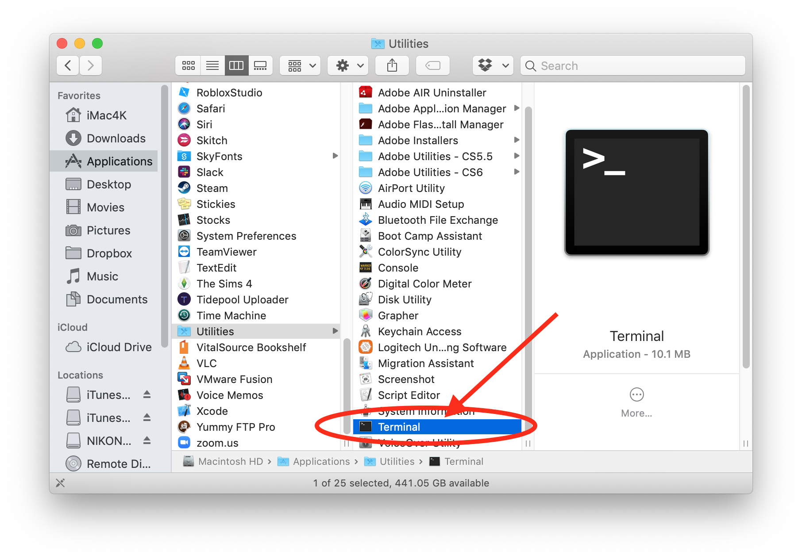

Set up your Apple Computer⌁
Any Apple computer will work so long as it is running a compatible macOS version, you have administrative rights to be able to install new programs on the computer, and a connection to the internet.
Verify macOS⌁
You MUST use macOS 10.14.3 (Mojave) at a minimum, if:
- You want to use omnipod or Loop-dev branches, and/or
- Your iPhone or iPod touch is using iOS 12.2 or newer
(You can only use macOS 10.13.6 High Sierra if you are building with Loop master branch and have iOS 12 or 12.1. The next version of Loop will require Mojave at a minimum, so keep that in your planning for the future.)
Verify by clicking the apple logo in your computer display's upper left corner and selecting About this Mac.

If your macOS is not the minimum version, click on the Software Update button and update. If your computer is older than late 2009/2010 (depending on computer model), you may not be able to update macOS sufficiently to use the most recent Xcode. You can check the latest macOS compatibility here.
Install Homebrew⌁
Homebrew is a program that will allow us to install the needed packages to build Loop. Open the Terminal application on your computer. It is located in the Applications folder, and then look in the Utilities subfolder for the Terminal application.

Terminal app is very plain looking when you open it. That is normal. Copy and paste the line below into Terminal prompt. Press return after you paste it in.
/usr/bin/ruby -e "$(curl -fsSL https://raw.githubusercontent.com/Homebrew/install/master/install)"
There will be a prompt asking if you want to continue. Press return to continue, then it will prompt for your password.
Don't freak out that you can't see your password while you type. That is normal. Terminal app doesn't show keystrokes when you enter passwords, but it is still recording your password entry. If you think you messed up because you were confused, press the delete key a bunch of times and then start fresh with the password entry.
Wait while the script does its thing...you’ll see info scroll by and then it will pause for awhile. Eventually, it will be done and you’ll see something that says “Installation successful” and you’ll have a ready Terminal prompt again.

You can close the Terminal application now. You’re done with it. You do not need to do these steps again for any subsequent Loop builds. This is one of those "just do it once" installations.
Next Step: Setup Apple Developer Account⌁
Now you are ready to move onto the next steps to Setup Apple Developer Account.